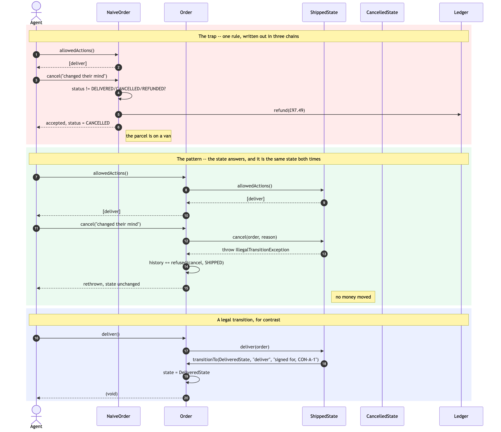
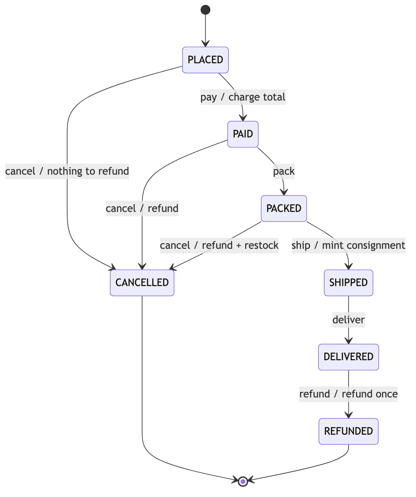
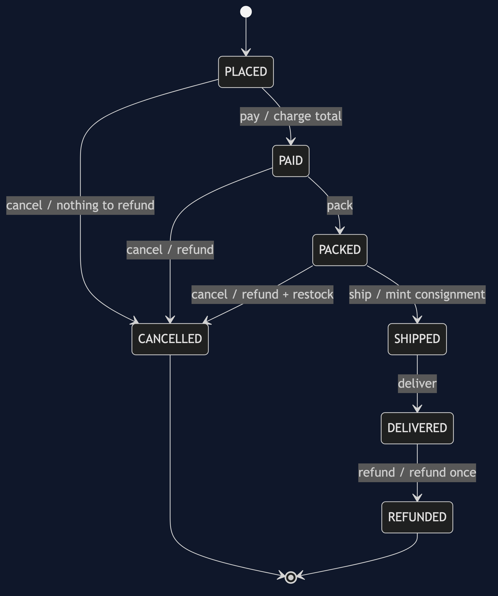

State Pattern — Sequence Diagram
The same two requests — cancel a shipped order, then refund an already cancelled one — sent first to NaiveOrder and then to Order.
Nothing about the requests changes. What changes is who answers them, and the second half has no conditional in it anywhere.

Reading It
The two lifelines that matter are Order and ShippedState. Every arrow leaving Order in the green block goes to the same place, whatever was asked. There is no branch on the Order lifeline, because there is nothing on it to branch on — status is not a field it reads, it is a question it forwards.
The refusal travels back through Order, not around it. attempt catches the exception, appends a refused event to the history, and rethrows. So the audit trail records the attempt whether or not it succeeded:
refund CANCELLED -> CANCELLED refused: it is final, and nothing more can happen to itThe Ledger lifeline is idle in the green block. That is the whole difference between the two halves rendered as an absence: in the red block the shop pays out £97.49 for a parcel that is still in transit, and in the green one nobody touches the money.
Step 16 is the pattern. ShippedState calls transitionTo on the very object that called it, naming DeliveredState. The state change is the last thing that happens, after the work, and it is caused by the work. That returning arrow — the state deciding what the context becomes — is what a Strategy sequence diagram never has.
The State Machine It Implements


Every arrow above is one overridden method. Every arrow that is not above — and there are thirty-three of them, six actions across seven states minus the nine drawn — is a method somebody did not override.
NaiveOrder implements this same picture with two extra arrows it did not mean to draw: SHIPPED --> CANCELLED and CANCELLED --> REFUNDED.
What Is Not Drawn
The other six states' lifelines. They would be idle. A request only ever reaches one state, and that is the claim: there is no dispatcher consulting a table, no chain being walked, and no second object involved in deciding.
A failure path for transitionTo. It cannot fail. By the time it is called the work is done and the state has already decided; it appends an event and assigns a field.
Order validating anything. It never does. The nearest it comes is attempt, which knows the name of the action purely so it can write the history entry, and does not know what the action means.
See class-diagram.md for the static structure, and animation.html to step through the lifecycle one request at a time.